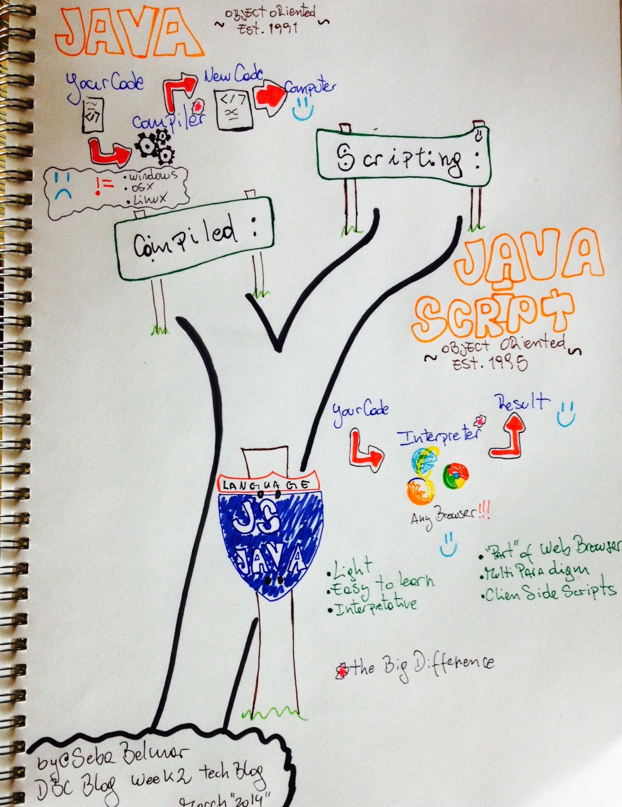

Home
|
About
|
Cultural Blog
|
Technical Blog
|
Photography
TECHNICAL
BLOG
w8-Dynamic vs. Static
w7-SQL vs NonSQL
w6-OOP vs FOP
w5-Classes
w4-Cycle
w3-Loops
w2-Java != JS
w1-Comparing W's
JAVA != JavaScript
